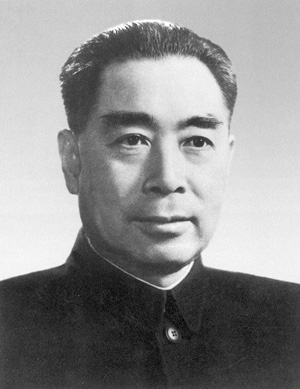

 周恩来（1898年3月5日－1976年1月8日），江苏淮安人。字翔宇[2]，曾用名飞飞[2]、伍豪[3]、少山、冠生等。[4]中国共产党、中华人民共和国主要领导人之一，中国人民解放军军事家。 周恩来毕业于南开大学，早年留学日本、法国、德国、英国等地，为旅法共产主义小组骨干。回国后，担任黄埔军校政治部副主任、主任。第一次国共内战期间，担任中共苏区中央局书记、中国工农红军总政委兼第一方面军政委、中央革命军事委员会副主席，参与中央苏区历次反围剿战争，指挥长征。西安事变中，他代表中共中央与中国国民党签订合约，共同对日作战。抗日战争期间，担任国军政治部副主任兼第八路军驻渝办事处主任，负责国共双方军事与政治调停。日本投降后，陪同中国共产党中央委员会主席毛泽东前往重庆，与中国国民党总裁蒋介石于重庆谈判。第二次国共内战期间，担任中国人民解放军代总参谋长，代表中国共产党进行北平和谈。 中华人民共和国成立后，历任中央人民政府政务院总理、中华人民共和国国务院总理、全国政协主席、中共中央政治局常委等，直至1976年1月逝世。1949年至1958年期间，兼任中华人民共和国外交部部长。此外，他历任中共中央书记处书记、中共中央军委副主席、中共中央副主席等重要职务。
1898年3月5日，周恩来生于江苏淮安[8]（现江苏省淮安市淮安区）城内驸马巷[2]。祖籍浙江绍兴。据家谱记载，先祖是宋朝学者周敦颐，与鲁迅（即周树人）同宗。其所属宝佑桥周氏（又称“老八房”）尊周庆为始祖，从周庆到周恩来共历18代。祖父周骏龙（又名攀龙，字云门，后改名起魁）[9]，在清咸丰年间跟随二哥周昂骏北上淮安，随馆学幕，并在此定居。生父周劭纲，生母万氏，出生后不久即过继给早逝的叔父周贻淦为嗣，由守寡嗣母陈氏抚养长大[10][11]。 1917年的周恩来 1919年的周恩来 1910年春，周恩来随伯父周贻庚到中国东北地区[12][11]，在铁岭银岗书院学习[13]。半年后，转入奉天官立东关模范小学，立志要“为中华之崛起”而读书[14][15]。1913年7月毕业，8月16日入天津南开学校[16][17]，因表现优异而为学校创办人严范孙、张伯苓器之为“宰相之才”[18] ，特免其学杂费，这是南开当时唯一一个免费生[19][20]。青年周恩来相貌英俊潇洒，在南开曾反串表演，相识了妻子和革命伴侣邓颖超[21][22][23]。 1917年至1919年，周恩来赴日本明治法律学校学习[24][8][25]。1919年4月，得悉南开学校即将创立大学部，周恩来决定回国学习。临行前，他把《大江歌罢掉头东》一诗书赠给南开同学张鸿诰[5]。9月8日，周恩来注册进南开学校大学部文科学习，学号62号，其后大学部正式改名南开大学。不久五四运动爆发，周恩来积极投身其中，成为运动领导核心，于9月16日组织成立觉悟社[2][26]，主编《天津学生联合会报》[27]，并用笔名“伍豪”在报刊上发表时评文章[3][28][29]。1920年1月29日，周恩来等四人领导天津各校学生数千人赴直隶省公署请愿，被当局拘捕[30]。校方在直隶省教育厅压力下，开除包括周恩来在内被捕学生学籍[31][32]。为此严范孙特捐款7000银洋，设置“范孙奖学金”，资助周恩来和李福景出国深造[18]。1920年11月7日，周乘船赴法国勤工俭学[2][33]，分别在法国、英国[34][35]、德国柏林大学考察学习[8]，在巴黎结识也是勤工俭学的邓小平，成为终生好友及革命伙伴[36][37]。
在旅欧的岁月中，年轻的周恩来就表现出卓越的政治领导天赋和强烈的政治倾向[38]。1921年3月，他经张申府和刘清扬介绍加入共产主义小组[2][39]，随后与张申府、刘清扬、赵世炎、陈公培（一说是吴明）共5人一起建立巴黎共产主义小组，这是中国共产党成立以前在欧洲建立的第一个共产主义小组[40][41]，巴黎共产主义小组与国内的其他7个共产主义小组共同发起成立了中国共产党 [42]。1923年6月周恩来在巴黎以个人身份加入中国国民党，11月任国民党旅欧支部执行部总务科主任（执行部部长王京岐）。[43]1924年1月，国民党第一次全国代表大会在广州召开，孙中山推行“联俄、联共、扶助农工”的政策，主张国民党与共产党合作[44]。 周恩来任黄埔军校政治部主任，1924年 由张申府推荐，周恩来回国出任黄埔军校政治部副主任（主任为戴季陶）[45]，两个月后继任政治部主任[46]，主持建立主要由共产党骨干组成的“叶挺独立团”[2][47][48]。1925年2月、10月，与蒋介石等一起组织领导了第一、二次东征[2][49]，期间兼任国民革命军第一军政治部主任、副党代表，被授予国民革命军少将军衔[2][50]。1925年8月8日，周恩来与邓颖超结婚[2][51]。1926年“中山舰事件”后，周恩来辞去黄埔军校政治部主任之职，并在年底转往上海，任中共中央军委书记兼中共江浙区委军委书记[52]。
1927年3月，周恩来领导发动上海工人第三次武装起义[53]，迎接北伐军入城[54]。同年“四一二政变”之后，国共合作破裂[55]。8月1日，周恩来与张国焘、贺龙、叶挺、朱德等人发动南昌起义[56][57]，并任中共前敌委员会书记[53]，成为中国共产党武装力量的主要缔造者之一[58]。同月，在中共八七会议上当选中央政治局候补委员[2][59]。1928年4月，赴莫斯科参加中国共产党第六次全国代表大会[60]，当选中央政治局委员、常委、常委会秘书长[2]。11月返回上海，此后至1930年3月是中共中央工作的实际主持者。 1928年11月14日，组织成立向忠发、周恩来、顾顺章组成的中共中央特别任务委员会（简称特委）[53]，下设中共特别行动科[61]，并以学生时代的笔名“伍豪”为化名[3] 从事地下工作，工作包括情报收集、锄奸、安排工作人员渗透国民党党政部门等。特科三科（俗称“红队”、“打狗队”）负责暗杀活动[62]，也被称为“伍豪之剑”。1931年4月原中共中央政治局候补委员、特科负责人兼三科科长顾顺章变节供出了恽代英等中共高层领导人后，顾家九人被特科暗杀，即“爱棠村事件”[63][64]。1929年，彭湃、杨殷、颜昌颐等中共领导人被白鑫供出并遭国民党杀害，周恩来、陈赓等人亦设法暗杀白鑫[65][66]。 1930年3月，离上海去莫斯科。7月，在联共第十六次代表大会上作报告。8月回上海。9月，和瞿秋白一起纠正李立三“左”倾冒险主义错误，主持召开中共六届三中全会。1931年1月中共六届四中全会上，王明把持中央，周恩来任政治局常委，中共中央军委书记。 1931年12月，周恩来进入中央革命根据地，后任中共苏区中央局书记、中国工农红军总政委兼第一方面军政委、中央革命军事委员会副主席。1932年10月，中共苏区中央局在宁都开会，周恩来主持，史称宁都会议，矛头主要针对毛泽东[67]。任弼时等中央局领导以临时中央的行动方针为依据，批判毛泽东“专去等待敌人进攻的右倾主要危险”，提出把毛召回后方免除军事指挥权，前方由周恩来负责指挥作战的建议。最后经周恩来折冲，通过留毛泽东在前方辅助周恩来指挥的决议。但毛执意离开前方，答应“前方何时电召便何时来”[68]。 1933年春，和朱德一起领导和指挥了第四次反“围剿”斗争并取得大胜。毛泽东在后方遭遇冷落两年之久，后来掌权后反复提及此事。周恩来在1972年遭斗争时曾反复检讨宁都会议后“未曾向主席求教过一次，现在反省起来，对照主席在宁都会议的临别之言，我真无地自容”[69][70]。 1933年1月，中共临时中央由上海迁入苏区，同年秋，李德受共产国际派遣也从上海到达瑞金，任军事顾问。这时，正值国民党军队发动第五次“围剿”，中共中央总负责人博古（秦邦宪）遂完全依靠李德进行军事指挥，由于军事战略错误，第五次反“围剿”斗争陷入严重困境，中共中央与红军被迫实行战略转移。为统筹转移事宜，中央成立了三人团作为党和红军的最高领导机构。其中，博古负责政治，李德负责军事，周恩来负责监督军事计划的执行，史称“老三人团”[71]。 1934年，红军长征开始[8][72]，1935年1月中旬在贵州遵义召开了政治局扩大会议。目前中共官方历史统一的说法是，“三人团”受到所谓王明“左倾”路线影响，遭到毛泽东、刘少奇等人的批评，而在湘江战役中，红军折损过半，周恩来认识到王明“左倾”错误路线的严重影响，在遵义会议中支持毛泽东的领导，对毛泽东重掌军权起到决定性的作用。遵义会议增选毛泽东为中央政治局常委，参加党和红军的决策；取消长征前组成的“三人团”，改为由朱德、毛泽东负责军事指挥，以周恩来为党内委托的在军事指挥上下最后决心的负责者[2]。会后，中央政治局常委根据遵义会议决定进行分工，在毛泽东提议下，张闻天代替博古在党内负总责；毛泽东为周恩来军事指挥上的帮助者[73][74]。随后在3月中旬，又成立了以周恩来为首，毛泽东和王稼祥为成员的三人军事指挥小组，亦称“新三人团”[75][76]，全权指挥红军作战。但不久周恩来即罹患重病，毛泽东遂逐渐取代周恩来负责指挥。1935年6月，红一、四方面军在四川懋功会师。为团结红四方面军，周恩来主动辞去红军总政委职务[2]，由张国焘接任。9月，在南下与北上问题上红军正式分裂，中共中央突然率领红一方面军的三军团和军委直属队，脱离右路军中的四方面军部队，秘密连夜北上[77]。10月19日，红一方面军到达陕西省吴起镇，与陕北红军会师[78]。 1936年12月12日，张学良、杨虎城发动西安事变，兵谏国民党领袖蒋介石，要求停止内战、一致抗日。周恩来代表共产党前往西安同国民党谈判，促成国共两党第二次合作[2][53]，组成抗日民族统一战线，共同抵抗日本侵略。抗日战争期间，周恩来先后担任中共长江中央局书记、副书记（书记王明），南方局书记，作为中共中央代表常驻国民政府所在地武汉、重庆进行党的工作和统一战线工作。1937年9月起，任中华民国国民政府军事委员会政治部中将副部长。